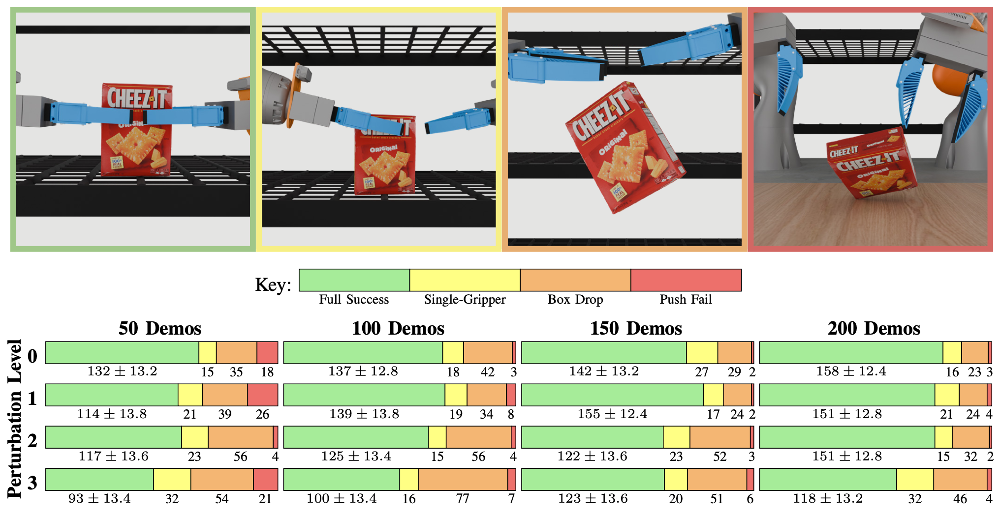

We collect teleoperation data for a constrained bimanual pick-and-place task. Then, we perturb end-effector poses via a random noising process to generate three additional datasets that still accomplish the task, but contain increasing constraint violations. We train a policy on each of these datasets and analyze task success and constraint adherence. Lastly, we collect demonstrations for the same task on hardware, train a policy, and evaluate its performance on similar metrics.
Diffusion policies have shown impressive results in robot imitation learning, even for tasks that require satisfaction of kinematic equality constraints. However, task performance alone is not a reliable indicator of the policy's ability to precisely learn constraints in the training data. To investigate, we analyze how well diffusion policies discover these manifolds with a case study on a bimanual pick-and-place task that encourages fulfillment of a kinematic constraint for success. We study how three factors affect trained policies: dataset size, dataset quality, and manifold curvature. Our experiments show diffusion policies learn a coarse approximation of the constraint manifold with learning affected negatively by decreases in both dataset size and quality. On the other hand, the curvature of the constraint manifold showed inconclusive correlations with both constraint satisfaction and task success. A hardware evaluation verifies the applicability of our results in the real world.
Simulation: We analyze the ability of diffusion policies to learn a kinematic constraint between end effectors, evaluating both task success and constraint adherence.
Hardware: We replicate these efforts on hardware, a real-world application.
Teleoperation data was collected using a specialized teleoperation setup where the operator had explicit control of the self-motion parameter, providing high-quality demonstrations of the bimanual pick-and-place task.
To examine how constraint violations affect policy performance, data was regenerated with varying levels of perturbation. We perturb the relative transform between end-effectors through a random noising process. This strategy allows us to study the effects of constraint violations on both task success and constraint adherence.
This table shows the success rates of diffusion policies trained on datasets of different sizes and end-effector perturbation levels. Each policy was tested over 200 trials. Note that success rates are categorized by different behaviors seen during rollouts: perfect success (green), success with loss of one gripper during transportation (yellow), dropping the box during transportation (orange), and failing to grasp the box (red).
We evaluate the success of hardware diffusion policies trained on the same task. The top image shows the evaluation distribution, and the bottom shows the evaluation results. Additionally, we record the average error from the desired transform representing the kinematic constraint, with respect to desired position (cm) and orientation (degrees).
Here we show how well the trained diffusion policies adhere to our kinematic constraint. The top tables show the average error in end-effector positions and orientations, while the bottom plots give a sense of how these errors spread across different dataset sizes and perturbation levels. For error, we examine the desired, constraint-satisfying relative transform between the two end-effetors versus the policy-predicted relative transform at the same timestep. Position error is measured by Euclidean distance and orientation error is measured by SO3 rotation distance.
@misc{foland2025diffusionpolicieslearnkinematic,
title={How Well do Diffusion Policies Learn Kinematic Constraint Manifolds?},
author={Lexi Foland and Thomas Cohn and Adam Wei and Nicholas Pfaff and Boyuan Chen and Russ Tedrake},
year={2025},
eprint={2510.01404},
archivePrefix={arXiv},
primaryClass={cs.RO},
url={https://arxiv.org/abs/2510.01404},
}